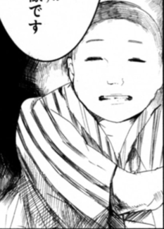

- Welcome to Touhou Wiki!
- Please register to edit. For assistance, check in with our Discord server or IRC channel.
Shirou Sendai
Shirou Sendai [sendai ɕʲiɽoː] Shirou Haga | |
|---|---|
|
 Shirou Sendai in Wild and Horned Hermit
| |
| Species | |
| Abilities |
Good fortune |
| Age |
150-151 (Age at death: 41-42; Born in 1860, Died in 1902) |
| Occupation |
God of good fortune |
| Location |
Currently wandering in and around the Human Village |
Appearances | |
| Print Works | |
| |
Shirou Sendai (仙台 四郎) was a real person from Sendai City who brought good fortune to the businesses that he visited. After his death he became known as a god.
He rarely speaks and is always smiling. However, he will not come to places that will go out of business.
General Information[edit]
Occupation[edit]
Shirou Sendai is a god who brings good fortune to the stores he visits.
Character Design[edit]
Name[edit]
His family name "Sendai" (仙台) is the name of location. On the other hand, his personal name "Shirou" is an ordinary name for the fourth son; "四" is a cardinal number "4" and "郎" is, in this case, "man".
Design[edit]
The humans of the village who have seen Sendai Shiro say they saw a human resembling a Fukusuke doll according to Marisa's information.
Story[edit]
In Wild and Horned Hermit, a figure referred to by the humans of the village as the god of good fortune begins appearing in stores. Any store that this god had visited will attain great fortune in business. Word of this god reaches the Hakurei Shrine and Reimu plans to kidnap him in order to attract visitors to her shrine. Sanae points out that he may be Sendai Shirou who became a true god due to the distinct similarities between the two.
Relationships[edit]
Sendai Shirou became the talk all around the humans in the village as they all try to attract him to their stores to obtain good fortune.
Additional Information[edit]
- Marisa Kirisame comments that this isn't a god that existed long before.
- Kasen reveals that this god purposely visits stores that are doing great business to guarantee good fortune to the store. In the end the good fortune comes from not the god, but the hard work of the business owners.
- This strategy may be a way for this god to obtain faith.
- Shirou's real name is "Shirou Haga" (芳賀四郎).
- Shirou Sendai has some points similar to Fukusuke; they are real people, can't speak owing to their intellectual disability, always smiles, and brings good fortune to stores.
Fandom[edit]
Official Sources[edit]
- 2011/07/25 - Wild and Horned Hermit - Chapter 7
| This page is part of Project Characters, a Touhou Wiki project that aims to write proper descriptions for all official characters of Touhou Project. Please keep the character page guidelines in mind when contributing. |